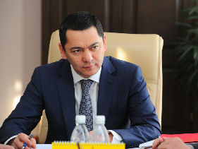
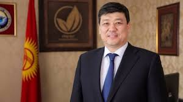
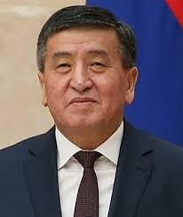

СИЗДИН ДОБУШ- БИЗДИН КЕЛЕЧЕК!
№6 Бабанов Омурбек
 Туулган жылы: 20.05 .1970
Кыргыз республикасынын саясат окулу.
2011-2012- КРнын примьер министри
2010-жылы Республика партиясын негиздеген.
Бизнесмен.
ASIA-MOLL комплексинин кожоюну.
Баса белгилеп кетчу нерсе, Омурбек Бабанов Кыргызстандыктардын ичинен биринчилерден болуп Facebookka катталган.
2017-жыл президенттике талапкер
№7 Сариев Темир Аргембаевич
Туулган жылы: 17. 06. 1963
Кыргыз Республикасынын саясат окулу.
Темир Сариев озунун эмгек жолун 1983-жылы
Аламедин-Мех
фабрикасында баштаган.
1987-жылы жогорку экономисттин
ордун ээлеген.
1991-жылы Кыргыз-Сырье биржасынын жетекчиси
1995-жылы "Тотон" Финансы-ондуруштук фирмасынын
башкы директору
2008-жылы Ак-Шумкар партиясынын жетекчиси
2015 -жылы Кыргыз Республикасынын примьер- министри
2017-жыл Президенттике талапкер
№3 Бакыт Торобаев

Эмгек жолу:
1995 — "Жамиля и К" Ондуруш-коммерциялык фирмасынын директору
2000–2007 — ОсОО "Мариям" башкы жетекчиси
2007–2009 — Жогорку Кенештин депутаты
2009–2010 — Чукул кырдаалдар министри
2013 "Онугуу — Прогресс" группасынын жетекчиси
"Ардак" медалы менен сыйланган
2017-жыл Президенттикке талапкер
№9 Жээнбеков Сооронбай Шарипович

Туулган жылы : 16.11.1958
1976-1977 -жылы Озгондо В.И.Ленин атындагы орто мектебинде
мугалим болуп эмгектенген
1983-1988-жылы башкы Зоотехник болуп иштеген
2010-жылы Ош областынын губернатору болуп иштеген
2016-жылдын 13-апрелинен тарта Кыргыз Республикасынын
Примьер министри